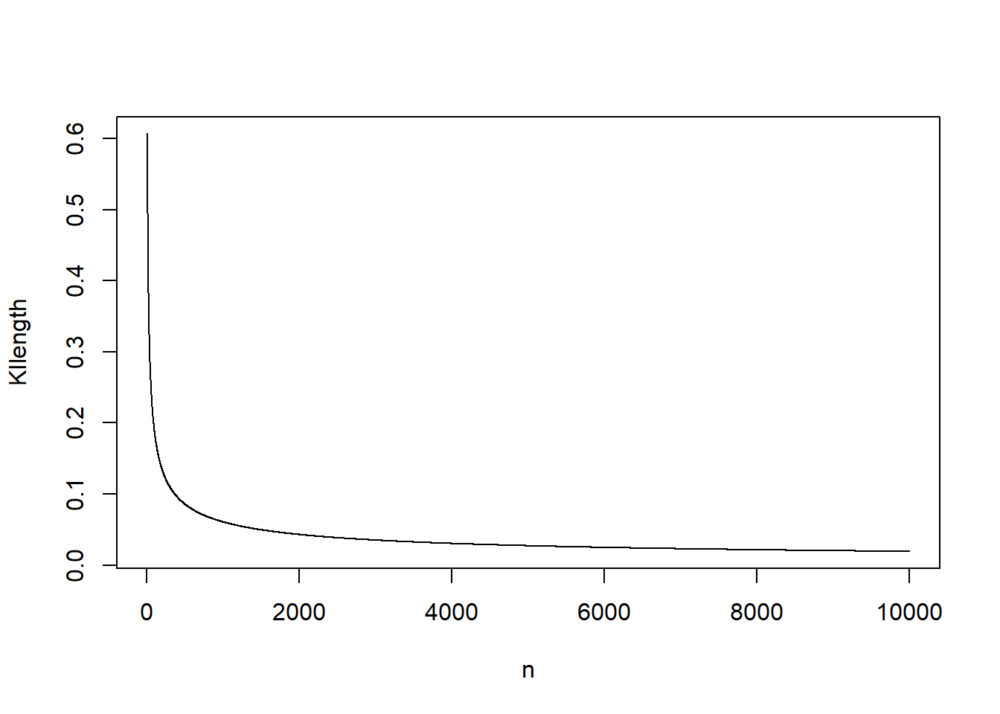

Kapitel 3 Data, objekt och funktioner
För att kunna arbeta med statistik och dataanalys är det viktigt att inte enbart förstå den statistiska metoden och kunna lösa problem med hjälp av en miniräknare. I praktiken är det även nödvändigt att förstå hur data hanteras, lagras och struktureras. I detta kapitel introduceras typer av data som normalt hanteras i R, sedan följer avsnitt om de olika typer av objekt som finns i R. Kapitlet avslutas med se på vad en funktion i R är för något och hur funkioner kan användas för att hantera objekt.
3.1 Data
Utan data är statistik innehållslöst. På samma sätt är data grundläggande för arbete i R. De vanligaste datatyperna i R är
- character (text), som anges med citationstecken t ex “a”, “3”.
- numeric (decimaltal), t ex är 3, 32.1. Notera att 3 kan skriva 3.0.
- integer (heltal). 3, 32. Skillnaden mellan numeric och integer är att inga decimaler sparas, vilket spar minne.
- logical (data indikerar om något är sant eller falskt, TRUE/FALSE).
Observera att dessa datatyper beskriver hur data är lagrad och hur R ska tolka data. Det säger sig kanske självt att det inte går att använda räkneoperation om data är character (text).
Datatyper ska inte förväxlas med de datanivåer (nominal, ordinal, intervall och kvotskala) som man normalt förknippar med statistiska analyser. Datatyper ska inte heller förväxlas med om data är diskreta, kontinuerliga, kategorier eller kvantitativa.
Det är mycket viktigt för alla som arbetar med statistiska analyser av data att kunna tillämpa alla ovanstående begrepp på rätt situation. Ofta överlappar begreppen, men det är vanligt att begreppen inte gör det. Detta måste man ha en förståelse för.
3.2 Objekt
Data hanteras och sparas som objekt. För att skapa ett objekt används assignment-operatorn <-. Objektet sparas därmed i minnet i R, men inget resultat redovisas i Console. Om R stängs ner måste objektet skapas på nytt såvida användaren inte har angett att objektet ska sparas.
I regel arbetar man i R med flera olika objekt samtidigt. Objekten måste därför namnges och precis som Vid all programmering är noggrannhet a och o. Objektnamn inleds med en bokstav och får endast innehålla bokstäver, siffror, _ och .. Dessutom skiljer R på versaler och gemener. Det är inte alltid enkelt att namnge objekt, men det viktigaste är att vara konsekvent. På denna kurs rekommenderas följande principer för namngivning av objekt. Använd
- endast gemener.
- korta och logiska namn, t ex kan objektet population förkortas till pop.
- gärna understreck _ för sammanbinda långa objektnamn. Objektet ålder för kvinnor skulle kunna betecknas age_women och motsvarande för män är då age_men.
- Använd inte å, ä och ö.
- inte namn som redan är upptagna i R, t ex exp eller log.
Det tre vanligaste objekten för hantering av data är:
- vektorer,
- matriser,
- data frames.
3.2.1 Vektorer
En vektor är ett dataobjekt som är endimensionellt och består av \(n\) element. En vektor skapas med kommandot c() (‘’Combine Values into a Vector’’). Anta att vi observerar värdena \(3,-1,1,5,0\). Med hjälp av nedanstående kod skapas ett vektor-objekt med med 5 element:
Notera att inget visas i Console, men att objektet finns sparat i minnet upptäcker man i RStudio genom att observera den övre högra panelen under fliken Environment. Där listas alla objekt som finns sparade i minnet i R. För att titta på objektet exekveras objektet genom att köra nedanstående kod.
Du ska nu skapa ett antal vektorobjekt som sedan på olika sätt ska manipuleras.
- Skapa ett script som heter kap3_objekt_och_funktioner.R genom att välja File > New File > R Script och sedan direkt spara scriptet med File > Save As i mappen A5Rkod.
- Skriv in koden nedan i scriptet och spara med File > Save. Det är bra att få rutin på att ofta spara sitt script så att inte kod råkar försvinna.
# Skapar två numeriska vektorer
x <- c(3, 1, 1, 5, 0)
y <- c(2, 3, 5, 6, 9)
# Kombinera vektorer till en ny vektor
z <- c(x, y)Generellt gäller i R att om \(x\) är en vektor bestående av \(k\) element \[x = (x_1,x_2,\ldots,x_k)\] och \(y\) är en vektor bestående av \(l\) element \[y = (y_1,y_2,y_3,y_4,y_5)\] så skapar kommandot
en vektor med \(k + l\) element, \[z= (x_1,x_2,\ldots,x_k,y_1,y_2,\ldots,y_l)=(z_1,z_2,\ldots,z_{k+l}).\] För att se om detta stämmer tittar vi på objekten genom att exekvera dem.
- Fortsätter scriptet genom att skriva in nedanstående kod. Spara och kör koden.
I Console ser du då följande:
Både \(x\), \(y\) och \(z\) är numeriska vektorer. Det går även att skapa en vektor bestående av bokstäver. För att skapa en sådan vektor (character vector) sätts de enskilda elementen inom citationstecken.
- Fortsätt scriptet och skriv in nedanstående kod i scriptet, spara och kör koden.
# Skapar en vektor med ord
nordic_countries <- c("Denmark", "Finland", "Iceland", "Norway", "Sweden")
nordic_countriesI Console ser du då följande resultat.
> # Skapar en vektor med ord
> nordic_countries <- c("Denmark", "Finland", "Iceland", "Norway", "Sweden")
> nordic_countries
> [1] "Denmark" "Finland" "Iceland" "Norway" "Sweden"Kombineras en numerisk och en character-vektor blir hela vektorn en character-vector.
- Skriv följande kod i scriptet, spara och kör koden.
I Console erhålls följande output och vi ser att de tidigare numeriska värdena nu omges av citationstecken.
> # Skapa en vektor med en numerisk och en vektor med ord
> x_nordic_countries <- c(x, nordic_countries )
> x_nordic_countries
> [1] "3" "1" "1" "5" "0" "Denmark" "Finland"
> [8] "Iceland" "Norway" "Sweden"- Vi ska nu se introducera hur man på andra sätt kan skapa vektorer typer av vektorer.
# Skapar en vektor med värdena 1,2,3,4,5
v <- 1:5
# Skapar en vektor med endast ett element
n <- 150
# Skapar en vektor med ett bortfall.
ymis <- c(3, NA, 6, 3, 6)I Console får vi
> # Skapar en vektor med värdena 1,2,3,4,5
> v <- 1:5
> # Skapar en vektor med endast ett element
> n <- 150
> # Skapar en vektor med ett bortfall.
> ymis <- c(3, NA, 6, 3, 6)- Som svar på 3. ovan ser vi att koden, om den exekveras, skapar numeriska vektorer som enbart innehåller siffror, vektorer som enbart innehåller bokstäver, vektorer som skapats genom räkneoperationer eller sekvenser. Vidare finns vektorer med bortfall anges med
NA(Not Available).
En vektor som innehåller enbart en datatyp kallas för atomic. Detta kan vara värt att känna till eftersom eftersom det är vanligt att felmeddelande referar till just att en vektor inte är atomic.
Här ser du även exempel på hur används för att kommentera kod. Vid all programmering är det viktigt att förklara koden så att du själv och andra enkelt förstår vad koden gör. Kommentera alltid kod på denna kurs!. Även om det i triviala fall kan tyckas meningslöst är detta viktigt för att få rutin på att kommentera. 5. Exekvera koden. Vektor-objekten ska nu vara adderade till fliken Environment och återigen så visas inget i Console. 6. Fortsätt scriptet genom att skriva in nedanstående kod. Spara scriptet och kör koden.
I Console presenteras vektorerna.
> x
> [1] 3 1 1 5 0
> y
> [1] 2 3 5 6 9
> z
> [1] 3 1 1 5 0 2 3 5 6 9
> v
> [1] 1 2 3 4 5
> n
> [1] 150
> nordic_countries
> [1] "Denmark" "Finland" "Iceland" "Norway" "Sweden"
> ymis
> [1] 3 NA 6 3 6
> x_nordic_countries
> [1] "3" "1" "1" "5" "0" "Denmark" "Finland"
> [8] "Iceland" "Norway" "Sweden"

En viktig detla ser att kombinerar vi en vektor med numerisk vektor och en vektor med bokstäver så betraktas siffrorna som bokstäver. Det ser vi genom att det finns finns citationstecken kring siffrorna.
I praktiken måste data anpassas och manipuleras för planerade analyser. Vi börjar med att konstatera att varje element har en position. Med hakparenteser [] erhålls åtkomst till ett eller flera element, antingen genom att direkt identifiera positionen i vektorn med en siffra eller med logiska operatorer. Några vanliga och viktiga logiska operatorer är:
<är mindre än.>är mindre än.>=större än eller lika med<=mindre än eller lika med==lika med.
Genom att använda positioner och logiska operator kan användaren direkt hantera data i vektorn. Skriv in nedanstående kod i scriptet.
- Fortsätt scriptet genom att skriva in nedanstående kod.
- Läs scriptet och förstå vad koden gör.
> # Visa element 2 i vektorn x
> x[2]
> [1] 1
> # Visa med negativ indexering inte element 2 i vektorn x
> x[-2]
> [1] 3 1 5 0
> # Visa element 2, 3 och 4 i vektorn x
> y[c(2,3,4)]
> [1] 3 5 6
> # Visa med negativ indexering element 1 och 5 i vektorn x
> y[-c(2,3,4)]
> [1] 2 9
> # Visa element i vektor y som är större än eller lika med 4
> y[y >= 6]
> [1] 6 9
> # Visa element i vektor y från positioner där x har värden lika med 1.
> # (Kräver att x och y har lika många element)
> y[x == 1]
> [1] 3 5
> # Visa element i vektor y från positioner där nordic_countries == "Finland"
> y[nordic_countries == "Finland"]
> [1] 3Efter det att åtkomst till element i vektorn har erhållit kan dessa elements sparas eller förändras.
> # Spara element 2, 3, 4 i en ny vektor ysub och visa vektorn
> ysub <- y[c(2,3,4)]
> ysub
> [1] 3 5 6
> # Sätt värdet 0 i vektorn y där y är större än eller lika med 6
> ysub[ysub >= 6] <- 0
> # Sätt värdet 99 i vektorn y på positioner där nordic_countries är "Denmark"
> ysub[nordic_countries == "Finland"] <- 99Nya vektorer kan skapas med räkneoperationer. Beräkningarna sker då elementvis, till exempel adderas elementvärden i en vektor till elementvärden i en annan vektor som har motsvarade position. Nedan presenteras några vanliga räkneoperationer.
> # Addition av x och y
> x + y
> [1] 5 4 6 11 9
> # Multiplikation av x och y
> x * y
> [1] 6 3 5 30 0
> # Potenser skrivs med a^b
> y^2
> [1] 4 9 25 36 81
> # En konstant adderas till alla element i vektorn
> x + n
> [1] 153 151 151 155 150
> # Räkneoperationer med NA ger NA
> x + ymis
> [1] 6 NA 7 8 6
> # Addera delar av vektorer
> x[c(2,3,4)] + y[c(2,3,4)]
> [1] 4 6 11
> # Division med 0 är ej definierat. R anger det som Inf (infinity)
> # eller NaN (Not a Number) om det är 0/0.
> x/0
> [1] Inf Inf Inf Inf NaN
> # Exempel på längre räkneoperationer.
> # Notera att alla beräkningar är elementvisa.
> w <- x + (y^2 - n)/v
> w
> [1] -143.00000 -69.50000 -40.66667 -23.50000 -13.80000Spara scriptet kap3_objekt_och_funktioner.R.
3.2.2 Matriser
En matris är ett tvådimensionellt dataobjekt bestående av rader och kolumn. Analogt med c(), som kombinerar element till en vektor, används rbind() och cbind() för att binda ihop vektorer radvis eller kolumnvis till matriser. Det går inte att binda ihop numeriska vektorer som med vektorer som innehåller bokstäver, utan en matris måste innehålla element av samma datatyp. En matris kan även skapas direkt med matrix() som transformerar en vektor till ett antal rader och kolumner.
Fortsätt scriptet kap3_objekt_och_funktioner.R och skriv in nedanstående kod.
> # Skapa en matris genom att binda samman x och y radvis. Matrisen får 2 rader och 5 kolumner
> m1 <- rbind(x, y)
> m1
> [,1] [,2] [,3] [,4] [,5]
> x 3 1 1 5 0
> y 2 3 5 6 9
> # Skapa en matris genom att binda samman x, y, n och x radvis. Matrisen får 5 rader och 4 kolumner.
> m2 <- cbind(x, y, n, x)
> m2
> x y n x
> [1,] 3 2 150 3
> [2,] 1 3 150 1
> [3,] 1 5 150 1
> [4,] 5 6 150 5
> [5,] 0 9 150 0
> # Skapa en matris genom att binda samman x och ymis radvis. Matrisen får 5 rader och 2 kolumner.
> m3 <- rbind(x, ymis)
> m3
> [,1] [,2] [,3] [,4] [,5]
> x 3 1 1 5 0
> ymis 3 NA 6 3 6
> # Skapa med matrix() en matris med två rader och 5 kolumner.
> # Matrisen fylls på kolumnvis och notera att detta inte blir samma som m1.
> m4 <- matrix(z, 2, 5)
> m4
> [,1] [,2] [,3] [,4] [,5]
> [1,] 3 1 0 3 6
> [2,] 1 5 2 5 9
> # Skapa med matrix() en matris med fem rader och 2 kolumner.
> # I detta fall är de två första kolumnerna i m2 samma som m5.
> m5 <- matrix(z, 5, 2)
> m5
> [,1] [,2]
> [1,] 3 2
> [2,] 1 3
> [3,] 1 5
> [4,] 5 6
> [5,] 0 9

Använd rbind() och cbind() vid skapande av matriser eftersom det är mindre risk för för missförstånd var elementen hamnar i matrisen.
För åtkomst till element krävs nu, eftersom matriser består av rader och kolumner, att bägge dimensionerna anges. Först anges radnummer, sedan kolumnnummer.
> # Visa element på rad 2 och kolumn 3
> m1[2,3]
> y
> 5
> # Visa element på rad 2 och alla kolumner
> m1[2,]
> [1] 2 3 5 6 9
> # Visa element på alla rader och kolumner 3
> m1[,3]
> x y
> 1 5
> # Visa
> m2[c(1,2),]
> x y n x
> [1,] 3 2 150 3
> [2,] 1 3 150 1Det går att utföra elementvisa beräkningar, vilket kräver att matriserna har samma antal rader och kolumner. Observera att elementvis multiplikation inte är samma som det som betecknas matrismultiplikation. Det är naturligtvis inga problem att i R använda matrismultiplikation, men detta går utöver kursens mål.
> # Addera element i matris 1 med element i matris 3
> m1 + m3
> [,1] [,2] [,3] [,4] [,5]
> x 6 2 2 10 0
> y 5 NA 11 9 15
> # Multiplicera element i matris 1 med element i matris 3. OBS! Detta är inte matrismultiplikation!
> m1 * m3
> [,1] [,2] [,3] [,4] [,5]
> x 9 1 1 25 0
> y 6 NA 30 18 54
> # Dividera element i matris 1 med en konstant n
> m1 / n
> [,1] [,2] [,3] [,4] [,5]
> x 0.02000000 0.006666667 0.006666667 0.03333333 0.00
> y 0.01333333 0.020000000 0.033333333 0.04000000 0.06Spara dataobjects.R.
Det går att tillämpa logiska operatorer även på matriser, men den extra dimensionen gör detta omständligt. Därför introduceras en tredje typ av dataobjekt som är enklare att arbeta med.
3.2.3 Data frames
En data frame är det vanligaste objektet för dataanlys. En data frame har likheter med matriser eftersom den har två dimensioner (rader och kolumner), men kan innehålla element med olika datatyper, t ex både numeriska värden och bokstäver. Vidare innehåller en data frame ytterligare information som variabelnamn och variabeltyp.
För att skapa en data frame används data.frame() och vi ska nu se på några exempel. Observera att en data frame även anger information om radnummer. Dessa nummer är dock inte definierade som en sepearat kolumn.
Skriv nedanstående kod i dataobjects.R.
> # Skapa en data frame genom att ange vektorer
> df <- data.frame(x, y, nordic_countries)
> df
> x y nordic_countries
> 1 3 2 Denmark
> 2 1 3 Finland
> 3 1 5 Iceland
> 4 5 6 Norway
> 5 0 9 Sweden
> # Skapa en data frame genom ange transformera en matris.
> data.frame(m1)
> X1 X2 X3 X4 X5
> x 3 1 1 5 0
> y 2 3 5 6 9För åtkomst till element finns nu flera alternativ. Dels kan används precis som förut ´[]´, dels finns nu möjlighet att använda $ för att komma åt data genom att använda variabelnamn. I nedanstående kod jämförs de bägge metoderna.
> # Visa kolumn 3
> df[2,1]
> [1] 1
> df$x[2]
> [1] 1
> # Visa värdet i rad 2 och kolumn 1
> df[,3]
> [1] Denmark Finland Iceland Norway Sweden
> Levels: Denmark Finland Iceland Norway Sweden
> df$nordic_countries
> [1] Denmark Finland Iceland Norway Sweden
> Levels: Denmark Finland Iceland Norway SwedenVi kan enkelt addera nya kolumner till en data frame.
> # Ursprungligt data frame
> df
> x y nordic_countries
> 1 3 2 Denmark
> 2 1 3 Finland
> 3 1 5 Iceland
> 4 5 6 Norway
> 5 0 9 Sweden
> # Skapa variabeln sample_size baserat på n som bara har ett värde
> df$sample_size <- n
> df
> x y nordic_countries sample_size
> 1 3 2 Denmark 150
> 2 1 3 Finland 150
> 3 1 5 Iceland 150
> 4 5 6 Norway 150
> 5 0 9 Sweden 150
> # Skapa en variabel som heter ysq baserat på y i samma data frame.
> df$ysq <- df$y^2
> df
> x y nordic_countries sample_size ysq
> 1 3 2 Denmark 150 4
> 2 1 3 Finland 150 9
> 3 1 5 Iceland 150 25
> 4 5 6 Norway 150 36
> 5 0 9 Sweden 150 81
> # Skapa en tom variabel som heter x_cat
> df$x_cat <- NA
> df
> x y nordic_countries sample_size ysq x_cat
> 1 3 2 Denmark 150 4 NA
> 2 1 3 Finland 150 9 NA
> 3 1 5 Iceland 150 25 NA
> 4 5 6 Norway 150 36 NA
> 5 0 9 Sweden 150 81 NAGenom att kombinera $ förenklas användningen av de logiska operatorerna och det är enkelt att transformera variabler och även skapa mindre data frames.
> # Ändra värdet på sample_size för Danmark från 150 till 300
> df$sample_size[df$nordic_countries == "Denmark"] <- 300
> df
> x y nordic_countries sample_size ysq x_cat
> 1 3 2 Denmark 300 4 NA
> 2 1 3 Finland 150 9 NA
> 3 1 5 Iceland 150 25 NA
> 4 5 6 Norway 150 36 NA
> 5 0 9 Sweden 150 81 NA
> # Ändra värden från NA till 1 i x_cat om x är större än 2
> df$x_cat[x > 2] <- 1
> df
> x y nordic_countries sample_size ysq x_cat
> 1 3 2 Denmark 300 4 1
> 2 1 3 Finland 150 9 NA
> 3 1 5 Iceland 150 25 NA
> 4 5 6 Norway 150 36 1
> 5 0 9 Sweden 150 81 NA
> # Ändra värden från NA till 0 i x_cat om x är mindre än eller lika 2
> df$x_cat[x <= 2] <- 0
> df
> x y nordic_countries sample_size ysq x_cat
> 1 3 2 Denmark 300 4 1
> 2 1 3 Finland 150 9 0
> 3 1 5 Iceland 150 25 0
> 4 5 6 Norway 150 36 1
> 5 0 9 Sweden 150 81 0
> # Skapa ett nytt data frame bestående av bara rader där x_cat är lika med 1
> df1 <- df[df$x_cat == 1, ]
> df1
> x y nordic_countries sample_size ysq x_cat
> 1 3 2 Denmark 300 4 1
> 4 5 6 Norway 150 36 1Spara dataobjects.R.
Det är ett moment som är väldigt viktigt i R och som inledningsvis tar tid att lära. Det är av förklarliga skäl ett oerhört viktigt moment i dataanalys och något varje användare måste vara trygg med. Det finns alternativa sätt arbeta med data i R och ofta kan samma resultat erhållas med olika lösningar. Vad som presentas här är är ett alternativ. Datahanteringen är ofta en tidskrävande del i statistisk undersökning och stor noggrannhet är viktigt. Det går inte att tillräckligt betona hur betydelsefull datahanteringen är i en undersökning. En korrekt analys kräver ju korrekt data.
Det är viktigt att arbeta med data och lära sig hantera data. DEt finns ofta flera lösningar, men på denna kurs rekommenderas starkt att ni följer de lösingar som presenteras här. Visserligen är de inte effektivast, varken i termer av beräkningstid eller längd på kod, men det är ett transparent sätt att jobba. Ni minimerar även risken för att det blir.
Exemplen här täcker även inte alla fall som ni kan tänkas stöta på när ni arbetar med komplicerade datamängder antingen i senare studier eller i arbetslivet. Men ni kan hantera de vanligaste typerna av datahantering som man stöter på.
3.3 Funktioner
En funktion utför operationer på objekt. Oftast sparas sedan resultatet som ett nytt objekt. Genom att ändra argument kan man anpassa vad funktionen gör. Börja med att skriva in nedanstående tre vektorer.
# Skapar två numeriska vektorer
x <- c(3, 1, 1, 5, 0)
y <- c(2, 3, 5, 6, 9)
ymis <- c(3, NA, 6, 3, 6)Skriv därefter in nedanstående kod, spara och kör.
[1] 10## [1] 5# Beräkna medelvärdet av en vektor
xbar <- sum(x)/n
xbar
# Beräkna stickprovsvarians s^2
s2 <- sum( (x - xbar)^2 )/(n -1)
s2
# Funktioner för medelvärdet och stickprovsvarians. Jämfört med resultat ovan
mean(x)
var(x)
# Skapa en vektor som repeterar ett värde
z <- rep(3, 5)
z
# Funktion som skapar en sekvens från 2 till 3 med steglängd 0.25
w <- seq(from = 2, to = 3, by = 0.25)
w
# Skapa en en vektor av element som repeterats
r <- c(rep(1, 3), rep(4, 2), rep(9, 10))
r
# Summan av ymis blir NA eftersom 3 + NA + 6 + 3 + 6 blir NA.
sum(ymis)
# Funktionen help() ger en beskrivning av vad en funktion gör
help(sum)## starting httpd help server ... doneI hjälpfilen står under Usage sum(..., na.rm = FALSE). och under Arguments ... numeric or complex or logical vectors. samt na.rm logical. Should missing values (including NaN) be removed?. Grundinställningen (default) är FALSE, det vill säga NA inkluderas i funktionen. För ta bort missing valus väljs na.rm=TRUE
Hjälpfilerna är ofta svår att förstå, men exemplen längst ner i hjälpfilerna är i regel klargörande.
Funktioner smo är vanliga att använda är funker


Det är enkelt att skapa egna funktioner i R och vilket är styrka.
Avslutningsvis finns det par viktiga funktioner för att hantera dataobjekt.
# Funktionen ls() listar alla objekt i minnet
ls()
[1] "df" "df1" "m1"
[4] "m2" "m3" "m4"
[7] "m5" "my__first_vec" "n"
[10] "nordic_countries" "r" "s2"
[13] "v" "w" "x"
[16] "x_nordic_countries" "xbar" "y"
[19] "ymis" "ysub" "z"
# Funktionen rm() raderar ett objekt
rm(y)
# Se om objektet y finns kvar
ls()
[1] "df" "df1" "m1"
[4] "m2" "m3" "m4"
[7] "m5" "my__first_vec" "n"
[10] "nordic_countries" "r" "s2"
[13] "v" "w" "x"
[16] "x_nordic_countries" "xbar" "ymis"
[19] "ysub" "z" Spara återigen scriptet. Stäng R.
För att radera alla objekt används kommandot rm(list = ls()). Var försiktig med denna funktion eftersom allt försvinner! Emellertid kan det vara en god idé inleda en dataanlys med denna kod för att säkerställa att minnet är tomt innan data läses in och analyser görs så att konflkter mellan objekt inte uppstår.
3.4 Sammanfattning
Du ska kunna
- installera R och Rstudio och starta det utan felmeddelanden.
- använda R som miniräknare och använda de olika metoderna för att exekvera kod i editorn.
- installera ett R-paket och aktivera det.
3.5 Övningar
Övning 2.1
Du har ett stickprov betående av observationerna \(4,-2,5,6,8\).
- Beräkna medelvärdet.
- Beräkna standardavvikelsen.
- Beräkna variationsbredden.
- Beräkna det geometriska medelvärdet för de positiva värden \(4, 5, 6, 8\).
- Beräkna det geometriska medelvärdet för alla värden \(4, -2, 5, 6, 8\).
Svar 2.1
- Svar: Medelvärdet är 4.2
- Standardavvikelsen \(s\) beräknas i R i editorn antingen genom att direkt tillämpa formeln för stickprovets standardavvikelse
\[s=\sqrt{\dfrac{\sum_{i=1}^n (x_i -\bar{x})^2}{n-1}}\]
- Svar: Standardavvikelsen är 3.768
- Variationsbredden, dvs skillnaden mellan det största och det minsta värdet är
## [1] 10- Svar: Variationsbredden är är 10.
- Det geometriska medelvärdet \[\bar{x}_g=(x_1\cdot x_2 \cdot \cdots \cdot x_n)^{1/n}\] kan i R beräknas med
# Välj enbart positiva värden
xpos <- NA
xpos[x > 0] <- x[x > 0]
# Du kan beräkna det geometriska medelvärdet med
exp( mean(log(xpos)) )## [1] NA# Alternativt kan du funktionen geometric.mean()
# i paketet psych. Aktivera paketet och beräkna.
library("psych")
geometric.mean(xpos)## [1] 5.566315- Svar: Det geometriska medelvärdet är 3.95.
- Det geometriska medelvärdet \[\bar{x}_g=(x_1\cdot x_2 \cdot \cdots \cdot x_n)^{1/n}\] kan i R beräknas med
## [1] NaN- Svar: Eftersom en observation är negativ blir NaN, vilket betyder ‘’Not a Number’’. Det går alltså inte att beräkna.
Övning 2.2
Ett slumpmässigt urval ger följande observationer \(0, 1, 1, 0, 0, 0, 0, 0, 1, 0, 1, 0, 1\),där \(1=Arbetslös\) och \(0=Förvärvsarbetande\). Beräkna andelen arbetslösa i stickprovet.
Svar 2.2
Andelen arbetslösa beräkna i R med
## [1] 0.3846154- Svar: Andelen arbetslösa i stickprovet är 0.38.
Övning 2.3
Kosumentpriset 2006-2011 är
| 2006 | 284.2 |
| 2007 | 290.5 |
| 2008 | 300.6 |
| 2009 | 299.7 |
| 2010 | 303.5 |
| 2011 | 311.4 |
Med hur många procent har prisnivån förändrats från 2007 till 2010?
Övning 2.4
Denna övningar handlar om potentslagarna. Då \(x\) och \(y\) är reella och \(a,b>0\) gäller följande likheter:
- \(a^x\cdot a^y=a^{x+y}\)
- \((a^x)^y=a^{xy}\)
- \(\left(\frac{a}{b}\right)^x=\frac{a^x}{b^x}\)
- \(\frac{a^x}{a^y}=a^{x-y}\)
- \(a^x \cdot b^x=(ab)^x\)
- \(a^0=1\)
Beräkna nedanstående uttryck relatera svaren till potenslagarna.
- \(4^2 + 4^3\)
- \(4^2*4^3\)
- \(4^5\)
- \((4^2)^3\)
- \(4^15\)
- \(4^2/4^3\)
- \(4^{-1}\)
- \(4^{-2}\)
- \(1/(4^2)\)
- \(1/16\)
- \(3^4*4^4\)
- \(12^4\)
Svar 2.4
I R kan uttrycken enkelt beräknas.
4^2 + 4^3
[1] 80
4^2*4^3
[1] 1024
4^5
[1] 1024
(4^2)^3
[1] 4096
4^15
[1] 1073741824
4^2/4^3
[1] 0.25
4^{-1}
[1] 0.25
4^{-2}
[1] 0.0625
1/(4^2)
[1] 0.0625
1/16
[1] 0.0625
3^4*4^4
[1] 20736
12^4
[1] 20736Vi ser att för \(b= c\) pga 1. \(d= e\) pga 2. \(k=l\) pga 5. Vidare gäller…
Övning 2.5
Den naturliga logaritmen, dvs logaritmen med basen \(e \approx 2.718282\), används ofta i statistiska beräkningar. Några logaratimlagar som gäller för naturliga logaritmen är:
- \(\ln\, \left (x\cdot y \right )=\ln\,x+\ln\,y\)
- \(\ln\, \left (x/ y \right )=\ln\,x-\ln\,y\)
- \(\ln\,x^{a}=a\cdot \ln\,x\)
- \(\ln e = 1\)
- \(e^{\ln x} = x\)
- \(\ln^{e^x} = x\)
Beräkna nedanstående uttryck och relatera svaren till logaritmlagarna
- \(\ln(3*4)\)
- \(\ln(3) + \ln(4)\)
- \(\ln(3/4)\)
- \(\ln(3) - \ln(4)\)
- \(\ln e\)
- \(\ln e^5\)
- \(e^{5+6}\)
- \(e^5*e^6\)
- $5 5 + 6 6
Svar 2.5
I R kan uttrycken enkelt beräknas.
Övning 2.6
Låt observationerna \(4,-2,5,6,8\) vara obundet slumpmässigt urval från en normalfördelad population. Genomför en hypotesprövning på 5% signifikansnivå för att testa medelvärdet i population är skild från 1.
Svar 2.6
- Vi observerar \(x=\{4,-2,5,6,8\}.\)
- Hypoteser: \(H_0:\mu=0\) vs \(H_1:\mu \neq 0\)
- Antaganden: Variabeln \(x\) är normalfördelad i populationen. Populationsvariansen \(\sigma^2\) är okänd i populationen. Vi har ett litet stickprov, \(n=5\).
- Testfunktionen ges av \(t=\dfrac{\bar{x}-\mu}{\sqrt{s^2/n}}\). Denna teststatistika är \(t\)-fördelad med \(n-1\) frihetsgrader om nollhypotesen är sann.
- Beslutregel: \(\alpha=0.05\). Tvåsidigt test, förkasta därför \(H_0\) om \(|t_{obs}| > t_{krit} = t_{4,\alpha/2=0.025} = 2.776\)
( (4 + (-2) + 5 + 6 + 8)/5 - 1 )/sqrt( ( 4^2 + (-2)^2 + 5^2 + 6^2 + 8^2 - (4 + (-2) + 5 + 6 + 8)^2/5 )/ (5-1)/5 )
[1] 1.898851Eftersom \(t_{obs}=\) 1.8988507 \(< 2.776 = t_{krit}\) kan vi inte förkasta nollhypotesen.
- Svar: Vi kan på 5% signifikansnivå inte påvisa att medelvärdet i populationen är skilt från 1. Notera att detta inte innebär att vi visar att medelvärdet är 1.
Övning 2.7
Du observerar följande datapunkter \(x = \{4,7,2,4,6\}\) och $y={7,3, 2, 5,6}$.

- Använd minsta-kvadratmetoden och beräkna koefficienterna \(a\) och \(b\) i regressionslinjen \(y=a + bx\).
- Använd koefficienterna och ge en prediktion för \(y\) givet att \(x=7\).
- Beräkna residualen för \(x=7\)
- Beräkna residualspridningen.
Svar 2.7
- Riktningskoefficienten ges av \[b=\dfrac{\sum_{i=1}^n(x_i-\bar{x})(y_i-\bar{y})}{\sum_{i=1}^n(x_i - \bar{x})^2}\]
# Direkt tillämpning av formeln ger
( (4 - (4 + 7 + 2 + 4 + 6)/5) * (7 - (7 + 3 + 2 + 5 + 6)/5) +
(7 - (4 + 7 + 2 + 4 + 6)/5) * (3 - (7 + 3 + 2 + 5 + 6)/5) +
(2 - (4 + 7 + 2 + 4 + 6)/5) * (2 - (7 + 3 + 2 + 5 + 6)/5) +
(4 - (4 + 7 + 2 + 4 + 6)/5) * (5 - (7 + 3 + 2 + 5 + 6)/5) +
(6 - (4 + 7 + 2 + 4 + 6)/5) * (6 - (7 + 3 + 2 + 5 + 6)/5) ) /
( (4 - (4 + 7 + 2 + 4 + 6)/5)^2 +
(7 - (4 + 7 + 2 + 4 + 6)/5)^2 +
(2 - (4 + 7 + 2 + 4 + 6)/5)^2 +
(4 - (4 + 7 + 2 + 4 + 6)/5)^2 +
(6 - (4 + 7 + 2 + 4 + 6)/5)^2 )
[1] 0.2105263
# Det går att räkna ut detta i flera steg genom att
# t ex beräkna täljare och nämnare separat.
# Alternativt använda beräkningsformeln
( 4*7 + 7*3 + 2*2 + 4*5 + 6*6 - (4+7+2+4+6)*(7+3+2+5+6)/5 )/
( (4^2 + 7^2 + 2^2 + 4^2 + 6^2) - (4 + 7 + 2 + 4 + 6)^2/5 )
[1] 0.2105263
# En kommentar: Dessa beräkningar kommer förenklas betydligt i R, vilket vi ska se senare.Interceptet är \(a=\bar{y} - b\bar{x}\)
- Svar: Riktningskoefficienten beräknas till \(b=0.2105\), vilket tolkas som att om \(x\) ökar en enhet så ökar \(y\) i genomsnitt med \(0.2105\) enheter. Interceptet beräknas till \(a=3.632\), vilket tolkas som medelvärdet för \(y\) när \(x=0\).
- Använd koefficienterna från regressionslinjen och sätt in värdet \(x=7\).
- Svar: Prediktionen \(\hat{y}=\) 5.1051. Detta är punkten på regressionslinjen när \(x=7\) och vår bästa gissning för det \(y\)-värde en individ med värdet \(x=7\) kommer att ha.
- En residual är skillnaden mellan ett predicerat värde och det faktiska observerade värdet, \(\hat{\varepsilon}=y_i - \hat{y}\). Eftersom \(y=3\) när \(x=7\) så residualen
- Svar: Residualen för \(x=7\) är -2.1051.
- Residualspridningen ges av \[s_\varepsilon=\sqrt{\dfrac{\sum_{i=1}^n(y_i - \hat{y}_i)^2}{n-2}}= \sqrt{\dfrac{\sum_{i=1}^n\hat{\varepsilon}_i^2}{n-2}}\]. Vi beräknar på samma sätt som i c) övriga residualer, kvadrerar och summerar.
sqrt(
( (7 - (3.6316 + 0.2105*4))^2 +
(3 - (3.6316 + 0.2105*7))^2 +
(2 - (3.6316 + 0.2105*2))^2 +
(5 - (3.6316 + 0.2105*4))^2 +
(6 - (3.6316 + 0.2105*6))^2 ) /
(5 - 2) )
[1] 2.347077- Svar: Residualspridningen är 2.347
(Notera att \(\sum_{i=1}^n \varepsilon_i^2\) kallas för residualkvadratsumman.)
Övning 2.8
- Installera paketet MASS som innehåller funktioner som kan vara användbara senare på kursen.
- Aktivera det installerade paketet MASS.
Svar 2.8
class() - what kind of object is it (high-level)? typeof() - what is the object’s data type (low-level)? length() - how long is it? What about two dimensional objects? attributes() - does it have any metadata?